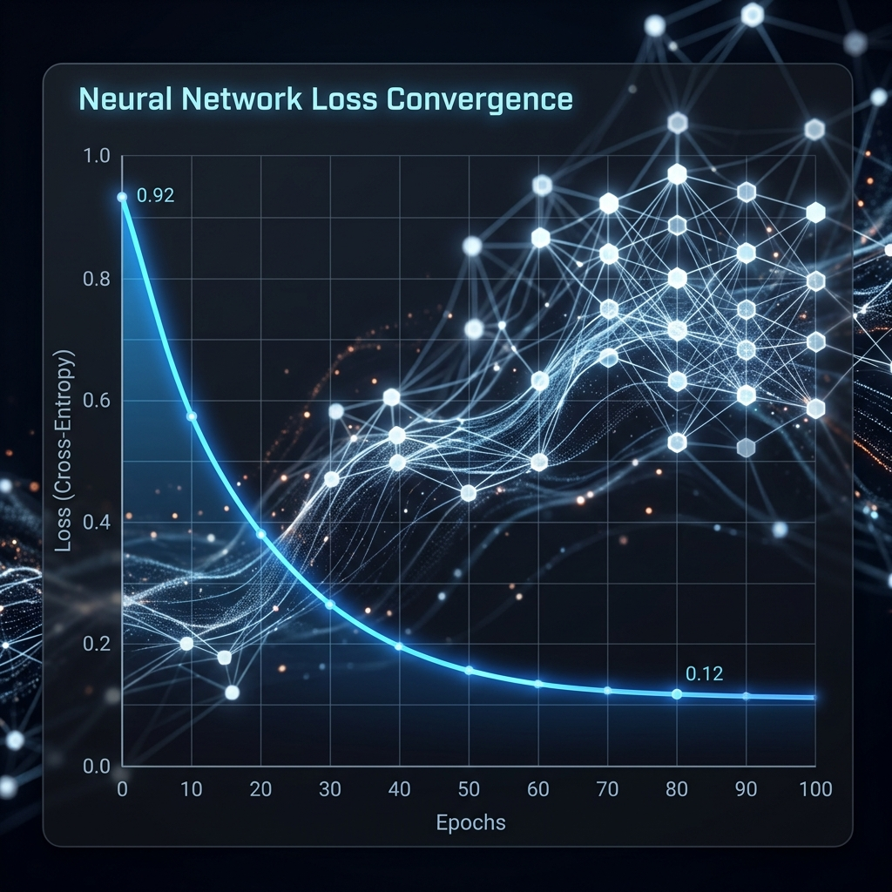
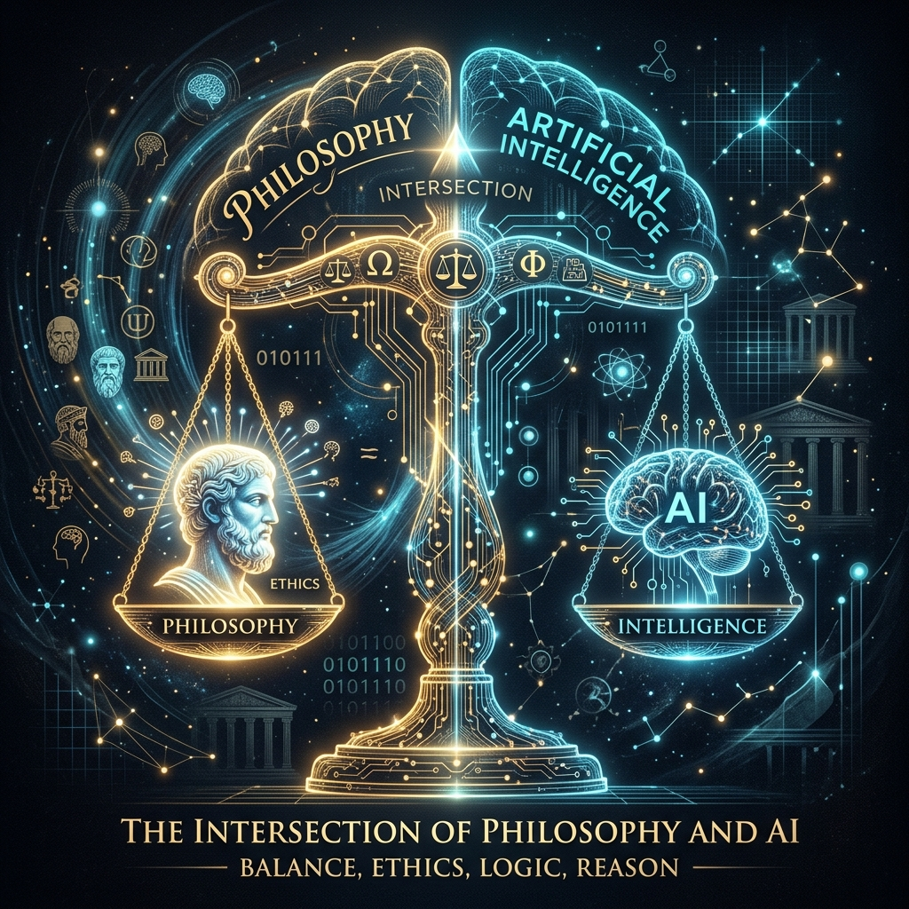
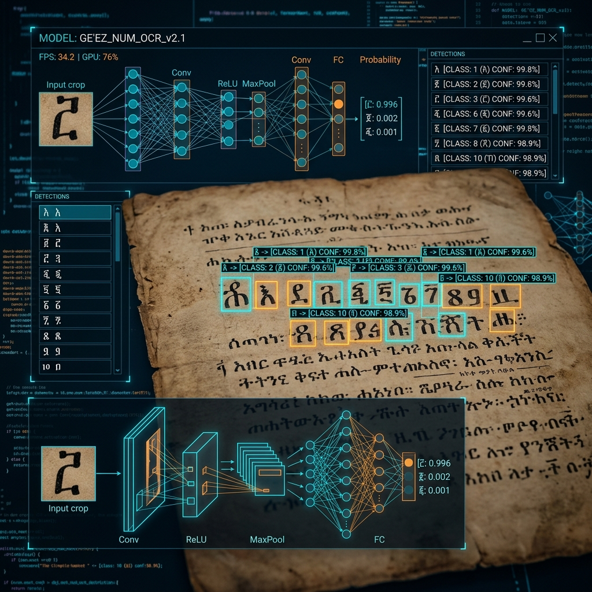

CISC480 Senior Capstone: SoulSpect
UST Computer Science · Spring 2026
For my capstone, I architected SoulSpect, a privacy-first personal intelligence app. I engineered the app for on-device inference using ChromaDB and RAG for semantic search. By combining backend architecture with digital ethics, I created a product that respects the user's digital autonomy while providing advanced AI capabilities.
Keywords: Capstone, On-Device Inference, ChromaDB, RAG, Privacy
AI Audio for User-Generated Content in Video Games
- Situation: Dynamic game audio for user-generated content required real-time generative capabilities.
- Obstacle: Existing MusicGen and AudioGen pipelines suffered from high latency, making them impractical for in-game audio rendering.
- Action: I developed and optimized text-to-audio and image-to-audio pipelines, successfully converting 50+ levels into prompts.
- Result: Optimized the generative pipeline latency to just 4 seconds per clip, making dynamic generation viable.
Keywords: MusicGen, AudioGen, Generative AI, Optimization, Game Audio
HallPals
Residence life operations platform
Personal Contribution: Backend Architect
- Situation: Residence Assistants (RAs) needed a more efficient, centralized platform for duty operations and incident management.
- Obstacle: Incident reporting procedures were fragmented, leading to slow response times and inefficient shift handoffs.
- Action: Engineered an AI-assisted RA duty platform with role-based access control and contextual incident guidance.
- Result: Piloted the software with 10 RAs, achieving a ~30-minute efficiency gain per shift based on iterative user feedback.
Keywords: Web Development, Role-based Access, AI Assistance, User Feedback
Drowsiness Detection (NumPy Neural Net)
Course project

- Context: I set out to build a multi-layer neural network completely from scratch using only NumPy for eye-state classification to detect drowsiness.
- What Didn't Go Well: Initially, I attempted to write the forward pass, backward pass, ReLU, and Softmax gradient descent all at once. Due to a hidden dimensionality bug in the backpropagation matrix multiplication, the model failed to learn and gradient descent diverged.
- What I Learned & Changed: This failure taught me the critical importance of modular testing in ML. I rewrote the codebase to unit-test each layer's forward and backward pass individually against known PyTorch outputs before integration. The final model successfully converged to 92% accuracy.
Keywords: NumPy, Neural Networks, Backpropagation, Gradient Descent, Debugging
The Ethical Dimensions of Artificial Intelligence
Philosophy · 2025

For my upper-level philosophy seminar, I authored a research paper analyzing the ethical implications of open-weight MaaS APIs. I examined the societal impacts of multimodal vector search and data privacy through the lens of utilitarian and virtue ethics, arguing for a moral imperative to prioritize user privacy over data monetization.
Keywords: Ethics, Research Writing, Interdisciplinary, Privacy
Digital Literacy Initiative (Service Learning)
Local Non-Profit · 2025
Volunteered with a local non-profit to teach digital literacy to underserved communities. Translating complex technical concepts into accessible language taught me that access to technology is a fundamental issue of modern equity, strengthening my cross-functional communication skills.
Keywords: Communication, Service Learning, Digital Equity, Interpersonal Skills
GeezNet: Deep Architectures for Ge'ez Numeral Recognition

Implemented CNN, ResNet50, and InceptionV3 baselines for Ge'ez numeral classification. Through rigorous hyperparameter tuning, achieved 97.8% accuracy and 98% F1 on a 10,000-image dataset, aiding in the digitization of historical scripts.
Keywords: CNN, ResNet50, InceptionV3, Classification, Historical Scripts